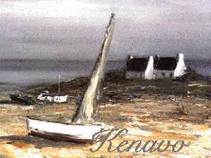
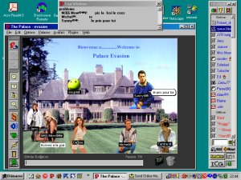

Palace est un
ensemble de nombreux "chats en ligne" très conviviaux,
moitié "chat" et moitié "site web".
Les visiteurs portent des surnoms et sont
représentés par des "smileys" ou des images de leur choix, (les
"props") parlent en émettant des bulles, mais la conversation
n'est pas éphémère, une fenêtre de Log
permet de suivre, voire "copier-coller", même quand on est
nombreux.
Voici la page d'entrée de
Kenavo, mon site Palace, Kénavo parce qu'au début je ne
pensais mettre que des vues de Bretagne ! et de fil en aiguille
....

Un fond (photo ou dessin) permet de varier
les "rooms". Kenavo en offre plus d'une centaine ... L'avantage est
qu'on peut recevoir ses invités sur son propre Palace,
certains sont des lieux très agréables de rencontre
entre amis venus du monde entier.

Voici une "copie d'écran" faite sur
un Palace ami, mes explications en sont-elles plus claires?
 Si vous entrez directement ici :
Vers l'entrée du site,
cliquez ici
Si vous entrez directement ici :
Vers l'entrée du site,
cliquez ici